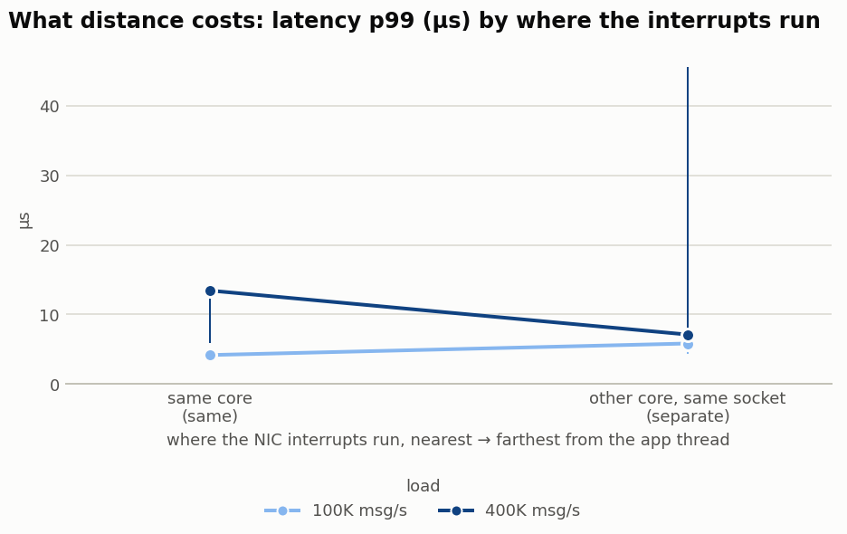
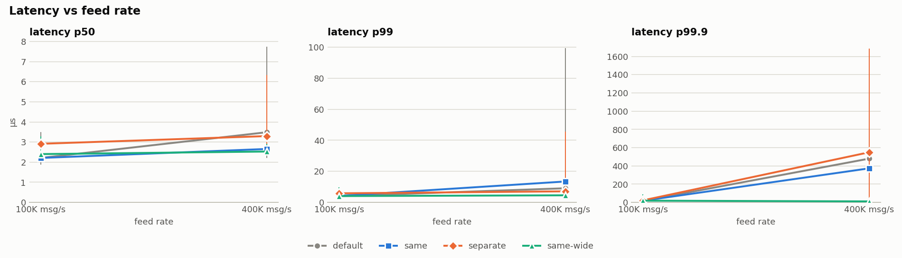
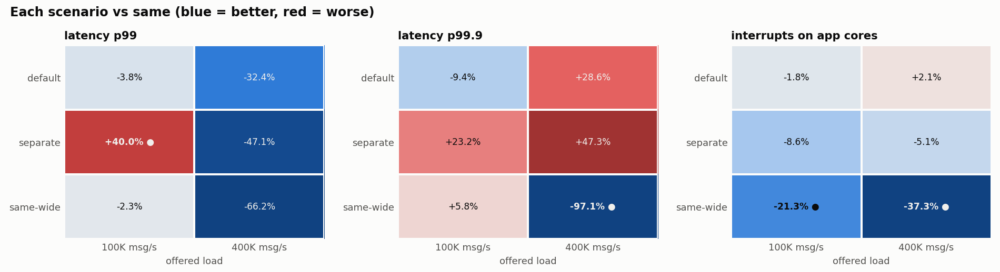
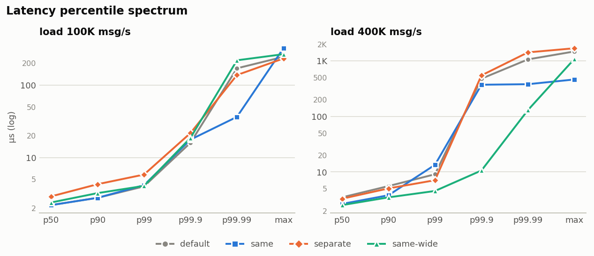
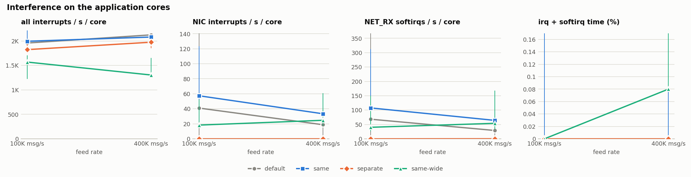
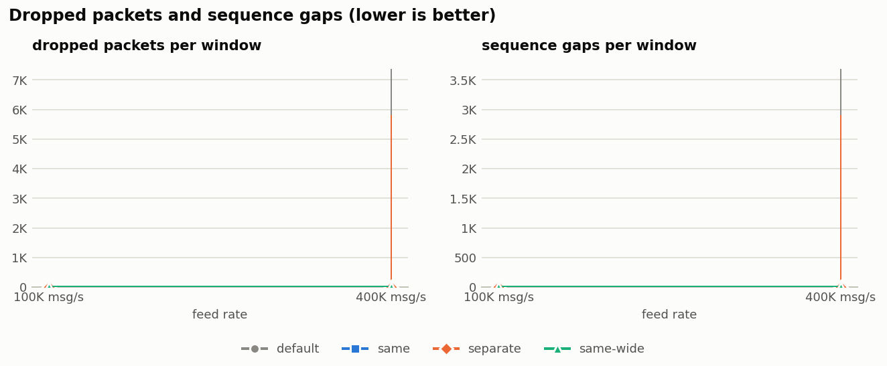
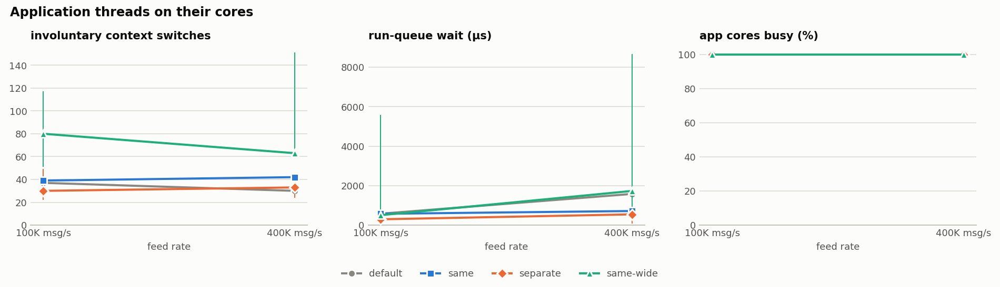
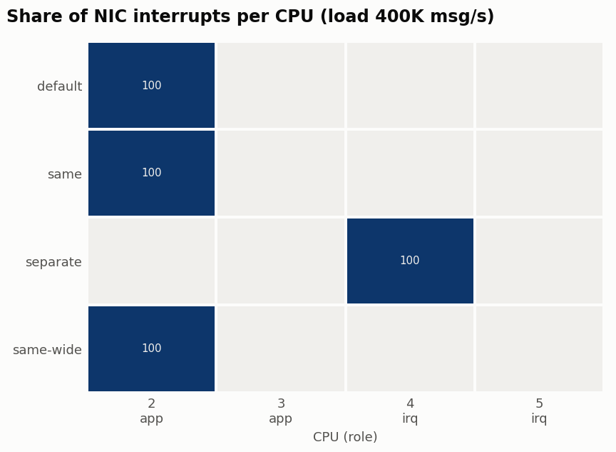

IRQ placement benchmark
sample-host · 20261020-222234 · 24 runs
Data quality warnings (19)
- ⛔ peer=local: loopback traffic never raises NIC interrupts. These results validate the tooling only, not IRQ placement.
- ⚠ rep 0, 400K msg/s, same-wide (app (restart per scenario)): the load generator fell 6.5 ms behind schedule, so it may be the bottleneck
- ⚠ rep 0, 400K msg/s, same (app (restart per scenario)): the load generator fell 6.6 ms behind schedule, so it may be the bottleneck
- ⚠ rep 0, 400K msg/s, default (app (restart per scenario)): the load generator fell 7.7 ms behind schedule, so it may be the bottleneck
- ⛔ rep 0, 400K msg/s, separate (app (restart per scenario)): 5800 packets dropped ({'udp_rcvbuf_errors': 2900, 'udp_in_errors': 2900})
- ⛔ rep 0, 400K msg/s, separate (app (restart per scenario)): 2900 sequence gaps (missed messages)
- ⚠ rep 0, 400K msg/s, separate (app (restart per scenario)): the load generator fell 6.7 ms behind schedule, so it may be the bottleneck
- ⚠ rep 1, 400K msg/s, separate (app (restart per scenario)): the load generator fell 6.7 ms behind schedule, so it may be the bottleneck
- ⚠ rep 1, 400K msg/s, same-wide (app (restart per scenario)): the load generator fell 4.4 ms behind schedule, so it may be the bottleneck
- ⛔ rep 1, 400K msg/s, default (app (restart per scenario)): 7376 packets dropped ({'udp_rcvbuf_errors': 3688, 'udp_in_errors': 3688})
- ⛔ rep 1, 400K msg/s, default (app (restart per scenario)): 3688 sequence gaps (missed messages)
- ⚠ rep 1, 400K msg/s, default (app (restart per scenario)): the load generator fell 4.1 ms behind schedule, so it may be the bottleneck
- ⚠ rep 1, 400K msg/s, same (app (restart per scenario)): the load generator fell 7.1 ms behind schedule, so it may be the bottleneck
- ⚠ rep 2, 100K msg/s, separate (app (restart per scenario)): the load generator fell 1.4 ms behind schedule, so it may be the bottleneck
- ⚠ rep 2, 400K msg/s, same-wide (app (restart per scenario)): the load generator fell 9.9 ms behind schedule, so it may be the bottleneck
- ⚠ rep 2, 400K msg/s, same (app (restart per scenario)): the load generator fell 6.7 ms behind schedule, so it may be the bottleneck
- ⚠ rep 2, 400K msg/s, separate (app (restart per scenario)): the load generator fell 3.7 ms behind schedule, so it may be the bottleneck
- ⚠ rep 2, 400K msg/s, default (app (restart per scenario)): the load generator fell 7.2 ms behind schedule, so it may be the bottleneck
- ⚠ app CPUs 2-3 are not in isolcpus (isolated: none); other tasks may run there
Verdict: interrupt proximity vs separate cores
It depends on load: proximity wins at 100K msg/s (on latency p99 (µs)); no clear difference at 400K msg/s.
Proximity (same) runs NIC interrupts on the application's own cores. Separate runs them on dedicated cores. Each load is decided by the first of these that differs clearly (non-overlapping min–max across repetitions): dropped packets → sequence gaps → latency p99 (µs) → latency p99.9 (µs). Missed data comes first because a feed handler that drops updates has failed, however fast it is.
| load | proximity (same) latency p99 (µs) | separate cores latency p99 (µs) | verdict | latency p99.9 (µs): separate vs same | dropped packets: separate vs same | interrupts / s per app core: separate vs same | proximity achieved |
|---|---|---|---|---|---|---|---|
| app (restart per scenario) · 100K msg/s | 4.2 | 5.8 | proximity, 29% better on latency p99 (µs) | +23.2% | – | -8.6% | – |
| app (restart per scenario) · 400K msg/s | 13.4 | 7.1 | no clear difference | +47.3% | – | -5.1% | – |
Secondary columns: + means separate is higher than same; ● = clear. Proximity achieved = share of NIC interrupts in same that fired on a core running a busy application thread (under 80% means same wasn't really proximity).
What the scenarios mean
Each scenario changes only where the server threads and the NIC interrupts run; the workload is identical. The CPU boxes show this run's actual layout.
default: Baseline: leave interrupts wherever the system put them
The application's threads run on the app CPUs (2-3). The benchmark doesn't touch IRQ affinity or RPS; they stay exactly as found when the run started (irqbalance is stopped during the run). Interrupts were actually observed on CPU(s) 2,4.
- Question
- How much does deliberate placement gain over doing nothing?
- Upside
- No tuning, and it reflects what an untuned production host does.
- Downside
- Where the interrupts land is up to the driver and kernel, so the result can vary between hosts and reboots, and it may overlap the app cores by accident.
same: Co-located: application and interrupts share the same cores
The application and the NIC interrupts are both on the app CPUs (2-3). Each interrupt is pinned to one of those CPUs, round robin. RPS (software receive steering) is set to the same CPUs as the interrupts, so protocol processing runs there too. The report checks how much of the interrupt work actually landed on the cores running the busy application threads ("proximity achieved").
- Question
- Is it better to keep packet processing and the application on one core?
- Upside
- The packet's data is still in that core's cache when the app reads it. There's no cross-core wake-up, because the interrupt wakes the core that will run the app. It uses the fewest cores. On isolated cores the packet is processed on the core whose thread reads it, provided the busiest queue's IRQ lands on the right core (see --irq-map).
- Downside
- Interrupt and softirq work steals cycles from the application and evicts its cache. Under heavy load the network stack and the app compete for the same CPU, which usually shows up as a worse tail (p99/p99.9) and higher service time. On isolated cores this deliberately breaks the isolation: every NIC interrupt stalls a busy-polling feed-handler thread while it runs.
separate: Isolated: interrupts get their own dedicated cores
The application's threads are on the app CPUs (2-3). NIC interrupts are on separate IRQ CPUs (4-5). RPS (software receive steering) is set to the same CPUs as the interrupts, so protocol processing runs there too.
- Question
- Does keeping interrupts off the application's cores improve latency or throughput?
- Upside
- The app cores do no interrupt work, so service time stays stable and tail latency under load is usually better. The isolated cores see only the feed handler, which is what isolcpus is for.
- Downside
- Every request crosses cores: the IRQ core processes the packet and then wakes the app thread on another core (an IPI), and the packet data has to move between caches. It also uses 2 extra core(s) compared with
same.
same-wide: Fairness check: same core budget as separate, but shared
Uses the same total CPUs as separate (2-5), with the application started on all of them and the interrupts spread over all of them. RPS (software receive steering) is set to the same CPUs as the interrupts, so protocol processing runs there too.
- Question
- Does
separatewin because isolation helps, or only because it had more cores? - Upside
- Puts
sameandseparateon an equal hardware budget, which makes it the fair comparison forseparate. - Downside
- It runs more application threads than the other scenarios, so its per-thread load is lower and it isn't directly comparable to
same.
How to read the comparison
Every Δ is relative to same. separate vs same is the core question, and separate vs same-wide checks whether a gain comes from isolation or just from more cores.
| If you see | It means |
|---|---|
separate clearly better than both same and same-wide | Isolation itself helps, so dedicate cores to interrupts. |
separate better than same but not same-wide | The gain came from having more cores, not from isolation. Sharing all the cores is just as good. |
same better than or equal to separate | Co-locate: cache locality and no cross-core wake-up outweigh the interference, and you save cores. This is typical at low or moderate load with blocking servers. |
| The answer changes with load | Pick by your operating point. same often wins at low load and separate at high load, so look at the load where your service actually runs. |
| Everything is 'within noise' | Placement doesn't matter for this workload at this load. Add reps, raise the load, or increase --work-lines before concluding. |
What “latency” means in this run
builtin: One-way latency from the publisher's send timestamp (CLOCK_REALTIME) to the moment the feed-handler thread read the message: wire, NIC, interrupt, softirq, socket and wake-up. Across two hosts this is only as accurate as their clock sync (see Clocks).
Feed: builtin publisher on the peer: 64 B messages to 127.0.0.1:9100, 4 flow(s), bursts of 20. Drops, sequence gaps and interrupts on the app cores are measured in every run, whatever the latency source.
Findings
Based on p99 latency. A result is clear when the repetitions' min–max ranges don't overlap.
⛔ Some runs dropped packets or missed sequence numbers. See the warnings above and the drops chart.
Charts








Summary table
Median across repetitions, with min–max below. Click a header to sort.
| mode | load | scenario | reps | messages received (msg/s) | latency p50 (µs) | latency p99 (µs) | latency p99.9 (µs) | latency p99.99 (µs) | latency max (µs) | dropped packets | sequence gaps | interrupts / s per app core | NIC interrupts / s per app core | other interrupts / s per app core | NET_RX softirqs / s per app core | app cores irq+softirq (%) | involuntary ctx switches | app run-queue wait (µs) | work p99 (µs) | NIC IRQs on target (%) | AWS allowance exceeded |
|---|---|---|---|---|---|---|---|---|---|---|---|---|---|---|---|---|---|---|---|---|---|
| app (restart per scenario) | 100K msg/s | default | 3 | 99,889 99,877–99,909 | 2.2 1.9–3.5 | 4.0 3.4–7.7 | 16.0 13.7–72.7 | 170.0 27.4–202.8 | 244.6 155.8–719.4 | 0 | 0 | 1,957 1,864–2,021 | 41 0–141 | 1,881 1,864–1,916 | 68 0–368 | 0.00 0.00–0.17 | 37 33–46 | 578.4 251.7–926.1 | 1.04 0.97–1.14 | 100.0 | 0 |
| app (restart per scenario) | 100K msg/s | same | 3 | 99,873 99,863–99,876 | 2.2 2.0–2.3 | 4.2 3.7–4.2 | 17.7 17.2–18.2 | 36.4 29.4–182.3 | 321.2 45.2–530.1 | 0 | 0 | 1,994 1,958–2,216 | 57 32–123 | 1,962 1,900–2,093 | 108 60–312 | 0.00 0.00–0.17 | 39 27–40 | 573.2 187.9–3,583.7 | 1.00 0.98–1.17 | 100.0 | 0 |
| app (restart per scenario) | 100K msg/s | separate | 3 | 99,888 99,866–99,896 | 2.9 2.2–2.9 | 5.8 4.3–6.3 | 21.8 18.2–82.9 | 137.2 31.5–198.7 | 232.0 167.5–369.9 | 0 | 0 | 1,823 1,820–1,958 | 0 | 1,823 1,820–1,958 | 0 | 0.00 | 30 22–49 | 294.7 145.2–612.9 | 0.98 0.95–1.14 | 100.0 | 0 |
| app (restart per scenario) | 100K msg/s | same-wide | 3 | 99,894 99,889–99,896 | 2.4 2.3–3.3 | 4.1 4.0–9.6 | 18.7 5.7–89.1 | 219.1 30.0–323.6 | 266.1 190.6–397.3 | 0 | 0 | 1,568 1,222–1,709 | 18 14–52 | 1,550 1,208–1,657 | 40 26–150 | 0.00 | 80 51–117 | 504.0 341.0–5,589.9 | 1.04 1.02–1.14 | 100.0 | 0 |
| app (restart per scenario) | 400K msg/s | default | 3 | 399,436 398,353–399,448 | 3.5 2.2–7.7 | 9.1 3.7–99.3 | 479.2 10.4–1,556.5 | 1,065.0 495.6–2,195.5 | 1,481.5 497.5–2,385.0 | 0 0–7,376 | 0 0–3,688 | 2,124 2,000–2,126 | 19 0–55 | 2,107 1,945–2,124 | 29 0–95 | 0.00 | 30 28–43 | 1,581.2 195.0–4,388.4 | 0.92 0.92–1.10 | 100.0 | 0 |
| app (restart per scenario) | 400K msg/s | same | 3 | 399,537 399,496–399,571 | 2.7 2.6–3.1 | 13.4 6.0–13.7 | 372.7 117.8–479.2 | 380.9 178.2–487.4 | 463.5 420.8–493.2 | 0 | 0 | 2,080 2,025–2,089 | 33 26–40 | 2,040 2,000–2,055 | 64 56–78 | 0.00 0.00–0.17 | 42 26–44 | 714.2 260.2–910.4 | 0.98 0.95–1.14 | 100.0 | 0 |
| app (restart per scenario) | 400K msg/s | separate | 3 | 399,435 398,558–399,555 | 3.3 2.6–6.3 | 7.1 4.9–45.6 | 548.9 7.7–1,687.6 | 1,425.4 93.2–2,261.0 | 1,691.3 194.5–2,618.6 | 0 0–5,800 | 0 0–2,900 | 1,974 1,854–2,137 | 0 | 1,974 1,854–2,137 | 0 0–0 | 0.00 | 33 24–36 | 545.1 81.5–5,839.1 | 0.94 0.89–0.95 | 100.0 | 0 |
| app (restart per scenario) | 400K msg/s | same-wide | 3 | 399,529 399,406–399,584 | 2.5 2.5–2.9 | 4.5 4.2–6.1 | 10.6 8.1–11.1 | 130.0 26.9–1,024.0 | 1,087.4 179.1–1,425.5 | 0 | 0 | 1,304 1,270–1,653 | 25 17–61 | 1,279 1,253–1,592 | 54 32–168 | 0.08 0.08–0.17 | 63 60–151 | 1,732.3 723.9–8,684.3 | 1.23 1.04–1.65 | 100.0 | 0 |
Change vs same
| mode | load | scenario | latency p50 (µs) Δ | latency p99 (µs) Δ | latency p99.9 (µs) Δ | dropped packets Δ | interrupts / s per app core Δ | involuntary ctx switches Δ |
|---|---|---|---|---|---|---|---|---|
| app (restart per scenario) | 100K msg/s | default | +0.0% | -3.8% | -9.4% | – | -1.8% | -5.1% |
| app (restart per scenario) | 100K msg/s | separate | +31.9% | +40.0% ● | +23.2% | – | -8.6% | -23.1% |
| app (restart per scenario) | 100K msg/s | same-wide | +8.7% ● | -2.3% | +5.8% | – | -21.3% ● | +105.1% ● |
| app (restart per scenario) | 400K msg/s | default | +31.3% | -32.4% | +28.6% | – | +2.1% | -28.6% |
| app (restart per scenario) | 400K msg/s | separate | +24.1% | -47.1% | +47.3% | – | -5.1% | -21.4% |
| app (restart per scenario) | 400K msg/s | same-wide | -4.8% | -66.2% | -97.1% ● | – | -37.3% ● | +50.0% ● |
● = clear (non-overlapping rep ranges). Green = better, red = worse.
Setup
| Host | sample-host |
| AWS | n/a |
| CPU | Intel(R) Core(TM) Ultra 9 285H |
| Kernel | 6.17.0-35-generic |
| Cmdline | (redacted) |
| Governors | ['powersave'] |
| NUMA | {'node0': '0-15'} |
| SMT active | 0 |
| App CPUs | 2,3 |
| IRQ CPUs | 4,5 |
| Interface | bond0 |
| Peer | local |
| RPS | auto |
| Channels | as found |
| Application | restarted per scenario: {bin} sub --port {port} --threads {ncpus} --cpus {cpus} --spin --stats-file {stats} |
| Feed | builtin publisher on the peer: 64 B messages to 127.0.0.1:9100, 4 flow(s), bursts of 20 |
| Latency source | builtin |
| isolcpus / nohz_full | isolated: none · nohz_full: none |
| Kernel params | none of the usual isolation parameters |
| Sysctls | {'net.core.busy_poll': '0', 'net.core.busy_read': '0', 'net.core.netdev_budget': '300', 'net.core.netdev_budget_usecs': '2000', 'net.core.rps_sock_flow_entries': '0', 'kernel.timer_migration': '1', 'kernel.sched_rt_runtime_us': '950000', 'vm.stat_interval': '1'} |
| IRQ order | [158] |
| Queue calibration | {} |
| Timing | 3 reps × 3.0 s window (+0.5 s warm-up), seed 1 |
| device | driver | NUMA | rx queues | IRQs | Mb/s |
|---|---|---|---|---|---|
| enp44s0 | r8169 | -1 | 1 | [158] | 2500 |
29 IRQs were allowed on the app CPUs before the run (anything here can interrupt them)
| IRQ | name | affinity | effective |
|---|---|---|---|
| 1 | IR-IO-APIC 1-edge i8042 | 0-15 | 8 |
| 8 | IR-IO-APIC 8-edge rtc0 | 0-15 | 9 |
| 9 | IR-IO-APIC 9-fasteoi acpi | 0-15 | 0 |
| 12 | IR-IO-APIC 12-edge i8042 | 0-15 | 7 |
| 14 | IR-IO-APIC 14-fasteoi INTC105E:00 | 0-15 | 10 |
| 18 | IR-IO-APIC 18-fasteoi i801_smbus | 0-15 | 0 |
| 120 | DMAR-MSI 0-edge dmar0 | 0-15 | 1 |
| 121 | DMAR-MSI 1-edge dmar1 | 0-15 | 2 |
| 122 | IR-PCI-MSI-0000:00:06.0 0-edge PCIe PME, aerdrv, PCIe bwctrl | 0-15 | 3 |
| 123 | IR-PCI-MSI-0000:00:07.0 0-edge PCIe PME, aerdrv, pciehp | 0-15 | 4 |
| 124 | IR-PCI-MSI-0000:00:1c.0 0-edge PCIe PME, aerdrv, PCIe bwctrl | 0-15 | 5 |
| 125 | IR-PCI-MSI-0000:00:1c.5 0-edge PCIe PME, aerdrv, PCIe bwctrl | 0-15 | 6 |
| 126 | IR-PCI-MSI-0000:00:0d.0 0-edge xhci_hcd | 0-15 | 7 |
| 134 | IR-PCI-MSI-0000:00:14.0 0-edge xhci_hcd | 0-15 | 15 |
| 142 | IR-PCI-MSIX-0000:00:0d.2 0-edge thunderbolt | 0-15 | 11 |
| 143 | IR-PCI-MSIX-0000:00:0d.2 1-edge thunderbolt | 0-15 | 12 |
| 158 | IR-PCI-MSIX-0000:2c:00.0 0-edge enp44s0 | 0-15 | 4 |
| 159 | IR-PCI-MSIX-0000:01:00.0 0-edge nvme0q0 | 0-15 | 1 |
| 160 | IR-PCI-MSIX-0000:2d:00.0 0-edge enp45s0 | 0-15 | 3 |
| 163 | IR-PCI-MSIX-0000:01:00.0 3-edge nvme0q3 | 2 | 2 |
| 164 | IR-PCI-MSIX-0000:01:00.0 4-edge nvme0q4 | 3 | 3 |
| 177 | IR-PCI-MSI-0000:00:0b.0 0-edge intel_vpu | 0-15 | 14 |
| 178 | IR-PCI-MSI-0000:00:16.0 0-edge mei_me | 0-15 | 15 |
| 179 | IR-PCI-MSIX-0000:00:14.3 0-edge iwlwifi:default_queue | 0-15 | 1 |
| 182 | IR-PCI-MSIX-0000:00:14.3 3-edge iwlwifi:queue_3 | 2 | 2 |
| 183 | IR-PCI-MSIX-0000:00:14.3 4-edge iwlwifi:queue_4 | 3 | 3 |
| 194 | IR-PCI-MSIX-0000:00:14.3 15-edge iwlwifi:exception | 0-15 | 0 |
| 195 | IR-PCI-MSI-0000:00:02.0 0-edge i915 | 0-15 | 14 |
| 196 | IR-PCI-MSI-0000:00:1f.3 0-edge snd_hda_intel:card0 | 0-15 | 15 |
Clocks (chrony / PTP)
{
"local": {
"phc": [
"ptp0"
]
}
}Raw runs
All 24 runs, in execution order
| # | rep | load | scenario | messages received (msg/s) | latency p50 (µs) | latency p99 (µs) | latency p99.9 (µs) | latency max (µs) | dropped packets | sequence gaps | interrupts / s per app core | involuntary ctx switches | NIC IRQs | on target % | IRQs by CPU |
|---|---|---|---|---|---|---|---|---|---|---|---|---|---|---|---|
| 1 | 0 | 100K msg/s | same-wide | 99,889 | 2.3 | 4.0 | 5.7 | 397.3 | 0 | 0 | 1,222 | 117 | 165 | 100.0 | 2:165 |
| 2 | 0 | 100K msg/s | default | 99,909 | 1.9 | 3.4 | 13.7 | 719.4 | 0 | 0 | 1,957 | 33 | 248 | 100.0 | 2:248 |
| 3 | 0 | 100K msg/s | separate | 99,888 | 2.2 | 4.3 | 18.2 | 369.9 | 0 | 0 | 1,820 | 49 | 749 | 100.0 | 4:749 |
| 4 | 0 | 100K msg/s | same | 99,876 | 2.2 | 3.7 | 18.2 | 530.1 | 0 | 0 | 1,958 | 39 | 350 | 100.0 | 2:350 |
| 5 | 0 | 400K msg/s | same-wide | 399,529 | 2.5 | 4.2 | 8.1 | 179.1 | 0 | 0 | 1,270 | 63 | 210 | 100.0 | 2:210 |
| 6 | 0 | 400K msg/s | same | 399,571 | 3.1 | 13.4 | 479.2 | 493.2 | 0 | 0 | 2,080 | 26 | 241 | 100.0 | 2:241 |
| 7 | 0 | 400K msg/s | default | 399,436 | 2.2 | 3.7 | 10.4 | 1,481.5 | 0 | 0 | 2,000 | 28 | 339 | 100.0 | 2:339 |
| 8 | 0 | 400K msg/s | separate | 398,558 | 6.3 | 45.6 | 1,687.6 | 2,618.6 | 5,800 | 2,900 | 1,854 | 36 | 833 | 100.0 | 4:833 |
| 9 | 1 | 100K msg/s | default | 99,877 | 3.5 | 7.7 | 72.7 | 244.6 | 0 | 0 | 1,864 | 37 | 192 | 100.0 | 4:192 |
| 10 | 1 | 100K msg/s | separate | 99,866 | 2.9 | 6.3 | 21.8 | 167.5 | 0 | 0 | 1,823 | 22 | 313 | 100.0 | 4:313 |
| 11 | 1 | 100K msg/s | same | 99,863 | 2.3 | 4.2 | 17.7 | 45.2 | 0 | 0 | 2,216 | 27 | 749 | 100.0 | 2:749 |
| 12 | 1 | 100K msg/s | same-wide | 99,894 | 3.3 | 9.6 | 89.1 | 266.1 | 0 | 0 | 1,568 | 51 | 223 | 100.0 | 2:223 |
| 13 | 1 | 400K msg/s | separate | 399,555 | 2.6 | 4.9 | 7.7 | 194.5 | 0 | 0 | 1,974 | 24 | 229 | 100.0 | 4:229 |
| 14 | 1 | 400K msg/s | same-wide | 399,406 | 2.5 | 4.5 | 11.1 | 1,425.5 | 0 | 0 | 1,653 | 60 | 741 | 100.0 | 2:741 |
| 15 | 1 | 400K msg/s | default | 398,353 | 7.7 | 99.3 | 1,556.5 | 2,385.0 | 7,376 | 3,688 | 2,126 | 43 | 114 | 100.0 | 2:114 |
| 16 | 1 | 400K msg/s | same | 399,496 | 2.7 | 6.0 | 117.8 | 463.5 | 0 | 0 | 2,025 | 44 | 155 | 100.0 | 2:155 |
| 17 | 2 | 100K msg/s | same-wide | 99,896 | 2.4 | 4.1 | 18.7 | 190.6 | 0 | 0 | 1,709 | 80 | 632 | 100.0 | 2:632 |
| 18 | 2 | 100K msg/s | separate | 99,896 | 2.9 | 5.8 | 82.9 | 232.0 | 0 | 0 | 1,958 | 30 | 147 | 100.0 | 4:147 |
| 19 | 2 | 100K msg/s | same | 99,873 | 2.0 | 4.2 | 17.2 | 321.2 | 0 | 0 | 1,994 | 40 | 194 | 100.0 | 2:194 |
| 20 | 2 | 100K msg/s | default | 99,889 | 2.2 | 4.0 | 16.0 | 155.8 | 0 | 0 | 2,021 | 46 | 855 | 100.0 | 2:855 |
| 21 | 2 | 400K msg/s | same-wide | 399,584 | 2.9 | 6.1 | 10.6 | 1,087.4 | 0 | 0 | 1,304 | 151 | 303 | 100.0 | 2:303 |
| 22 | 2 | 400K msg/s | same | 399,537 | 2.6 | 13.7 | 372.7 | 420.8 | 0 | 0 | 2,089 | 42 | 203 | 100.0 | 2:203 |
| 23 | 2 | 400K msg/s | separate | 399,435 | 3.3 | 7.1 | 548.9 | 1,691.3 | 0 | 0 | 2,137 | 33 | 713 | 100.0 | 4:713 |
| 24 | 2 | 400K msg/s | default | 399,448 | 3.5 | 9.1 | 479.2 | 497.5 | 0 | 0 | 2,124 | 30 | 292 | 100.0 | 4:292 |
Generated by irqreport.py from /opt/InterBenchmarks/examples/sample-app-loopback. PNG charts are in charts/.